Chapter 12 Assumptions
12.1 Learning Objectives
In this chapter we will review assumptions of MLMs and some ways to check them in R.
The learning objectives for this chapter are:
- Understand the assumptions underpinning MLMs;
- Develop and interpret R code and output for testing assumptions.
All materials for this chapter are available for download here.
12.2 Data Demonstration
12.2.1 Load Data and Dependencies
For this data demo, we will use the following packages:
library(lme4) # for multilevel models
library(lmerTest) # for p-values
library(dplyr) # for data manipulation
library(ggplot2) # for graphingThe data for chapter are a subsample from the 1982 High School Beyond data collected by the National Center for Educational Statistics, used as example data throughout Raudenbush, S. W., & Bryk, A. S. (2002). Hierarchical Linear Models: Applications and Data Analysis Methods: SAGE Publications. These data are related to student math achievement.
data <- read.csv('rb2002.csv')12.2.2 Assumptions of MLMs
In brief, the assumptions underlying MLMs are as follows:
- The model is correctly specified (i.e., all the predictors associated with the outcome and relevant random effects are included);
- The functional form is correct (e.g., the relationship between the predictors and outcome is linear if using a linear model);
- Level-1 residuals are independent and normally distributed;
- Level-2 residuals are independent and multivariate normally distributed;
- Residuals at level-1 and level-2 are unrelated;
- Predictors at one level are not related to errors at another level.
# 1. Model is correctly specified
# 2. The functional form is correct -- Q1-3
# 3. At L2, residuals are independent and normally distributed with a mean of 0 and some variance -- Q5
# 4. L1 predictors are independent of L1 residuals for all predictors -- Q6
# 5. L2 residuals are multivariate normal and are independent from one another and across L2 units --
# 6. L2 predictors are unrelated to L2 residuals -- Q12-13
# 7. Residuals at L1 and L2 are unrelated -- Q14
# 8. Predictors at one level are not related to errors at another level -- Q15In the data demonstration that follows, we will be showing some techniques for checking these assumptions. However, we note that there are many other ways to conduct similar checks; assumption checks are data exploration at the end of the day. If you know and prefer other methods of exploring the same facets of your data, go for it!
12.2.3 Assumption 1: Model Specification
Specifying your model means determining which predictors should be included and what parameters to estimate. A correctly-specified model is one that includes everything associated with your outcome and nothing not-associated. This is impossible to know for certain and most researchers are constrained by the resources they have to get data and ultimately by the data they have. A general approach for considering this is trying to include all possible relevant IVs when predicting a DV. When building your MLM, build a maximal model with all possibe random effects, and trim down as you see effects are zero. Comparing models with and without effects and reviewing the literature for important variables to consider are decent strategies here. Get experts to read your results and their ideas on if anything is missing!
12.2.4 Assumption 2: Functional Form is Correct
The functional form of your model refers to the function connecting your predictors and outcome. In linear models like MLMs, that form is (you guessed it!) linear. However, you can use MLMs for non-linear data by specifying other functions, which are not covered in the current set of modules. In our example data, let’s look at the relationship between an outcome of math achievement (mathach) and a predictor of socioeconomic status (ses). We can get a sense of whether that relationship is linear with a scatterplot:
data %>%
ggplot(mapping = aes(x = ses, y = mathach)) +
geom_point()## Warning: Removed 1 rows containing missing values (geom_point).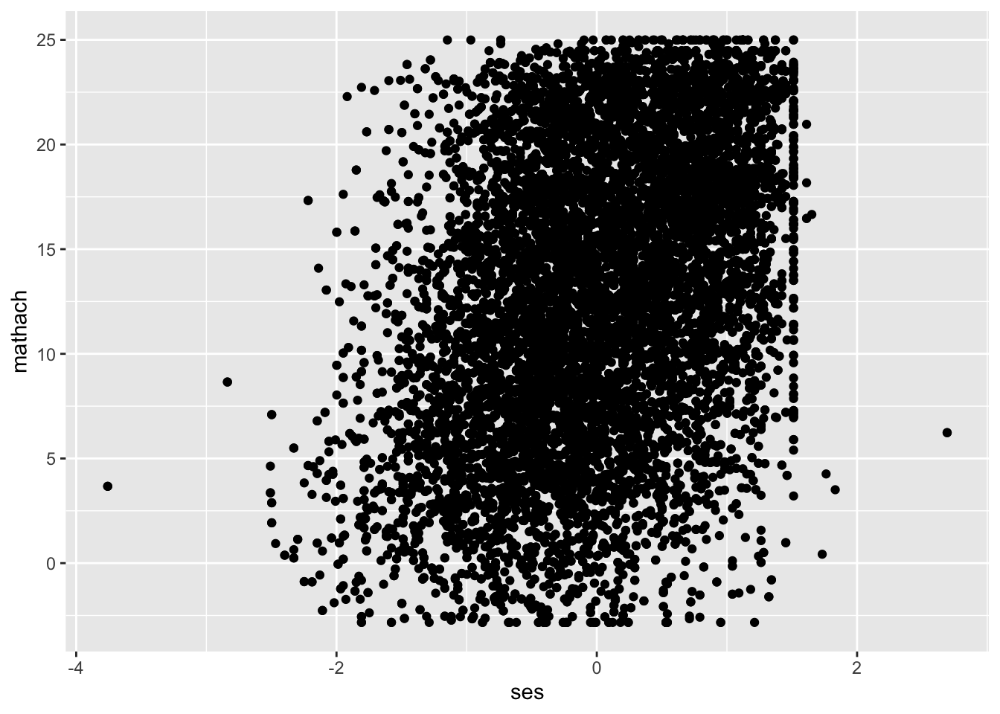
The scatterplot is hard to read because we have over 11,000 observations in our data. One option to improve readability is reducing the opacity of each point to get a clearer picture of how many points there are:
data %>%
ggplot(mapping = aes(x = ses, y = mathach)) +
geom_point(alpha = .2)## Warning: Removed 1 rows containing missing values (geom_point).
It looks loosely linear. Before we continue, for teaching purposes we’ll take a subset of 30 schools to make plotting easier for the rest of this data demo. For your data, you should consider all observations; this is just to make examples clearer.
I’D ADD EMPHASIS TO THE PART ABOUT THEIR DATA, ABOVE
data <- data %>%
filter(SCHOOL %in% head(unique(SCHOOL), n = 30))Let’s take a look at the relationship between SES and math achievement for each of the 30 schools in our subsetted data.
data %>%
ggplot() +
geom_point(mapping = aes(x = ses, y = mathach)) +
facet_wrap(~ SCHOOL)Looks like we have vaguely linear relationships; nothing looks quadratic. This is a subjective determination, be open to other, non-linear functions if a straight line doesn’t appear to do the job. Finally, let’s graph all points on one plane again but with regression lines overlaid for each school.
CURRENT HTML HAS NO REGRESSION LINES ON THE SCHOOLS
data %>%
group_by(SCHOOL) %>%
ggplot(mapping = aes(x = ses, y = mathach, colour = factor(SCHOOL))) +
geom_point(show.legend = FALSE) +
geom_smooth(method = lm, se = FALSE, show.legend = FALSE, fullrange = TRUE)## `geom_smooth()` using formula 'y ~ x'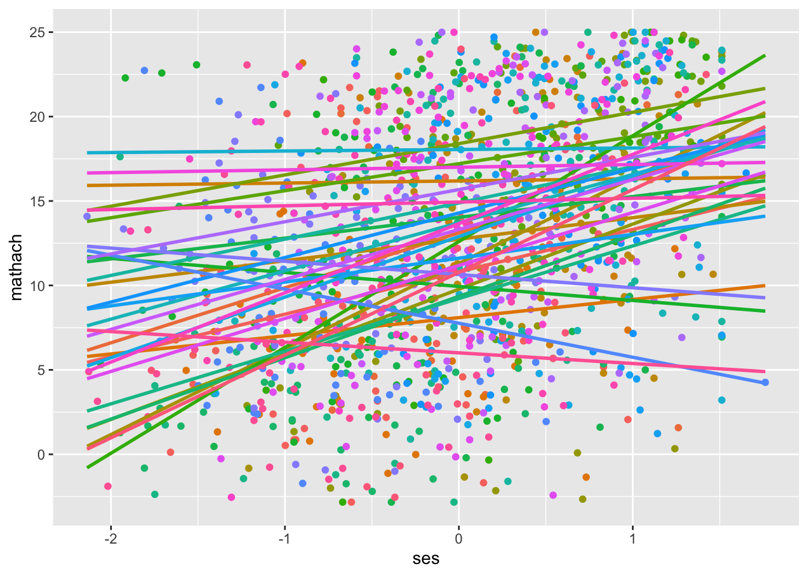
This isn’t an explicit test of functional form, but it looks like there is variance in intercepts and slopes across schools that merits multilevel modelling (or cluster-robust standard errors, if you don’t have any multilevel research questions).
12.2.5 An Aside: Extracting Residuals
In linear regression, we have the assumption of homoscedasticity. That is, the variance of residuals is roughly the same at any value of of your predictor(s). In multilevel models, we have two classes of residuals: level-1 residuals and level-2 residuals. The remaining assumptions all deal with these residuals: that they are normally distributed, that they don’t relate to each other, that they don’t relate to predictors at the same level or at the other level. We’re going to look at a model with math achievement predicted by SES centered within cluster (school) and mean SES predicting the intercept and slope of SES centered within cluster. We’ll estimate a random effect for the slope of SES centered within cluster. We’re not estimating the random effect covariance.
| Level | Equation |
|---|---|
| Level 1 | \(mathach_{ij} = \beta_{0j} + \beta_{1j}cwc\_ses + R_{ij}\) |
| Level 2 | \(\beta_{0j} = \gamma_{00} + \gamma_{10}ses\_mean + U_{0j}\) |
| \(\beta_{1j} = \gamma_{10} + \gamma_{11}ses\_mean + U_{1j}\) | |
| Combined | \(math_{ij} = \gamma_{00} + \gamma_{01}ses\_mean + \gamma_{10}cwc\_ses + \gamma_{11}cwc\_ses*ses\_mean + U_{0j} + U_{1j}cwc\_ses + R_{ij}\) |
model <- lmer(mathach ~ CWCses*ses_mean + (1|SCHOOL) + (0 + CWCses|SCHOOL), data = data, REML = TRUE)
summary(model)## Linear mixed model fit by REML. t-tests use Satterthwaite's method ['lmerModLmerTest']
## Formula: mathach ~ CWCses * ses_mean + (1 | SCHOOL) + (0 + CWCses | SCHOOL)
## Data: data
##
## REML criterion at convergence: 8555.5
##
## Scaled residuals:
## Min 1Q Median 3Q Max
## -2.87105 -0.70607 -0.03647 0.76336 2.77351
##
## Random effects:
## Groups Name Variance Std.Dev.
## SCHOOL (Intercept) 1.990 1.411
## SCHOOL.1 CWCses 1.379 1.174
## Residual 35.315 5.943
## Number of obs: 1329, groups: SCHOOL, 30
##
## Fixed effects:
## Estimate Std. Error df t value Pr(>|t|)
## (Intercept) 12.8243 0.3078 28.9279 41.661 < 0.0000000000000002 ***
## CWCses 1.9581 0.3412 27.3088 5.739 0.0000040499457 ***
## ses_mean 6.5269 0.6499 28.8676 10.044 0.0000000000628 ***
## CWCses:ses_mean 1.5239 0.7253 27.7253 2.101 0.0448 *
## ---
## Signif. codes: 0 '***' 0.001 '**' 0.01 '*' 0.05 '.' 0.1 ' ' 1
##
## Correlation of Fixed Effects:
## (Intr) CWCses ses_mn
## CWCses 0.000
## ses_mean -0.026 0.000
## CWCss:ss_mn 0.000 0.030 0.000Let’s extract the level-1 residuals and add them to our data to work with moving forward:
data$l1resid <- residuals(model)
head(data$l1resid)## [1] -1.9478535 10.1937749 10.7268788 -0.5893637 7.6105198 -6.0281684We’ll extract the level-2 residuals shortly.
12.2.6 Assumption 3: Level-1 Residuals are Independent and Normally Distributed
12.2.6.1 Independent
Our level-1 residuals should be independent of our level-1 predictors. For our example, if our level-1 residuals (\(\sigma^2\)) correlate to SES centered within cluster, we have heteroscedasticity, which we don’t want. We can check this visually by creating a scatterplot of the predictor and the residuals:
data %>%
ggplot(mapping = aes(x = CWCses, y = l1resid)) +
geom_point() +
labs(x = "CWCses", y = "residuals")
Those don’t look correlated; they look like a blob. We can check this statistically by calculating the correlation.
cor.test(data$l1resid, data$CWCses)##
## Pearson's product-moment correlation
##
## data: data$l1resid and data$CWCses
## t = -0.0000000000000030409, df = 1327, p-value = 1
## alternative hypothesis: true correlation is not equal to 0
## 95 percent confidence interval:
## -0.05377213 0.05377213
## sample estimates:
## cor
## -0.00000000000000008347562That correlation is essentially zero, meaning that our level-1 residuals and level-1 predictor are indeed uncorrelated!
12.2.6.2 Normally Distributed
We can check whether our level-1 residuals are normally distributed with a histogram:
data %>%
ggplot(mapping = aes(x = l1resid)) +
geom_histogram()## `stat_bin()` using `bins = 30`. Pick better value with `binwidth`.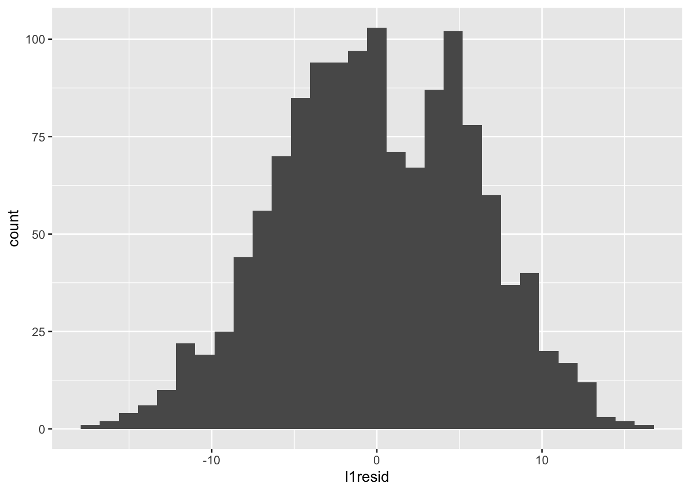
Those look normal-ish – there’s maybe something odd going on in that the distribution is bimodal, but that can be influenced by the number of bins. For example, with fewer bins:
data %>%
ggplot(mapping = aes(x = l1resid)) +
geom_histogram(bins = 15)
Let’s clear this up with a QQ plot:
data %>%
ggplot(mapping = aes(sample = l1resid)) +
stat_qq()
Those look fine. SAY WHY THEY LOOK FINE AND HOW TO TELL IF THEY ARE FINE
12.2.7 Assumption 4: Level-2 Residuals are Independent and Multivariate Normal
To check our level-2 residual assumptions, we need to extract the level-2 residuals and add them to our data. This requires a little more work than extracting the level-1 residuals. We could easily add level-1 residuals to our dataset because every row is a person and had a residual. Level-2 residuals are at the school level, so the vector of residuals cannot be appended as easily. Let’s create a level-2 dataset to work with instead.
l2_data <- data %>%
group_by(SCHOOL) %>% # group data by clustering variable, school
mutate(
mathach_mean = mean(mathach) # create mean math achievement per school
) %>%
select(SCHOOL, ses_mean, mathach_mean) %>%
unique() # select unique rows (rather than having school, ses_mean, and mathach_mean repeating over and over again)Then let’s add the level-2 residuals to this dataset. We get two columns of residuals with the ranef(model)$SCHOOL command; the first column is intercept residuals \(U_{0j}\)s, the second column the slope residuals \(U_{1j}\)s. Matrices are indexed as [row, column], so we use the [, 1] code to get all rows from column 1 and [, 2] to get all rows from column 2.
l2_data$intercept_resid = ranef(model)$SCHOOL[, 1]
l2_data$slope_resid = ranef(model)$SCHOOL[, 2]12.2.7.1 Independent
Like with level-1 residuals, we want our level-2 residuals to be independent from level-2 predictors. We also want both our level-2 residuals — intercept and slope residuals — to be independent of each other (which was not an issue at level-1, given that we only had one category of residual, \(\sigma^2\)). We can check whether our level-2 residuals are independent from the level-2 predictors and from one another as we did before: with a scatterplot and/or by calculating the correlation among them.
First, let’s look at the relationship between the intercept residuals and the level-2 variable of mean SES.
l2_data %>%
ggplot(mapping = aes(x = intercept_resid, y = ses_mean)) +
geom_point() And the correlation:
And the correlation:
cor.test(l2_data$ses_mean, l2_data$intercept_resid)##
## Pearson's product-moment correlation
##
## data: l2_data$ses_mean and l2_data$intercept_resid
## t = -0.000000000000077435, df = 28, p-value = 1
## alternative hypothesis: true correlation is not equal to 0
## 95 percent confidence interval:
## -0.3602692 0.3602692
## sample estimates:
## cor
## -0.00000000000001463377Those look uncorrelated to me!
Next, let’s check that the slope residuals are independent from the predictor of mean SES:
l2_data %>%
ggplot(mapping = aes(x = slope_resid, y =ses_mean)) +
geom_point()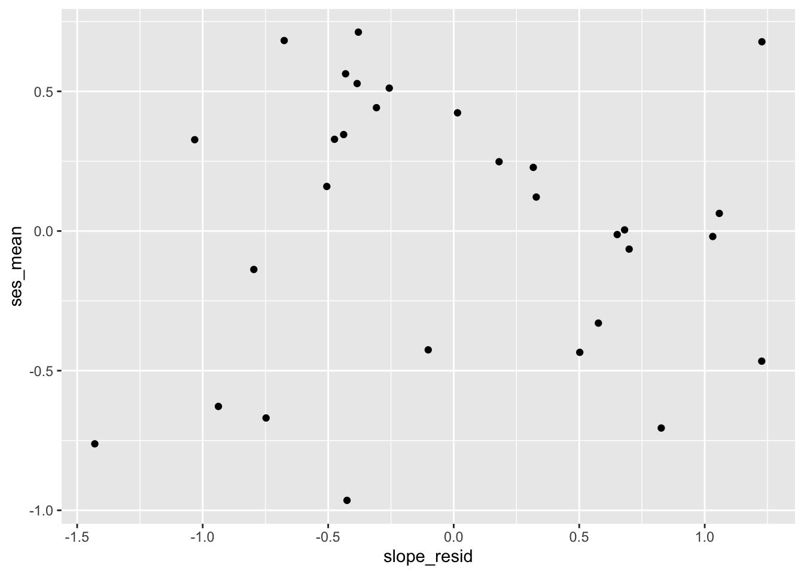
cor.test(l2_data$ses_mean, l2_data$slope_resid)##
## Pearson's product-moment correlation
##
## data: l2_data$ses_mean and l2_data$slope_resid
## t = 0.0000000000000036749, df = 28, p-value = 1
## alternative hypothesis: true correlation is not equal to 0
## 95 percent confidence interval:
## -0.3602692 0.3602692
## sample estimates:
## cor
## 0.0000000000000006944986Those also look uncorrelated!
Finally, let’s check whether the level-2 residuals are independent of each other:
l2_data %>%
ggplot(mapping = aes(x = slope_resid, y = intercept_resid)) +
geom_point()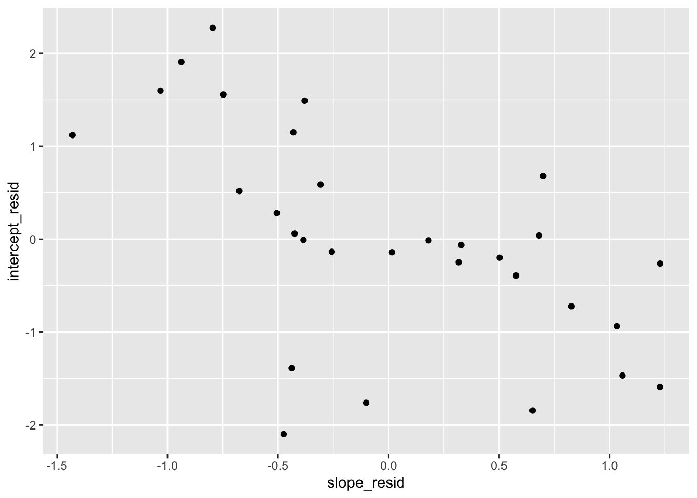
cor.test(l2_data$intercept_resid, l2_data$slope_resid)##
## Pearson's product-moment correlation
##
## data: l2_data$intercept_resid and l2_data$slope_resid
## t = -3.9046, df = 28, p-value = 0.0005424
## alternative hypothesis: true correlation is not equal to 0
## 95 percent confidence interval:
## -0.7859072 -0.2970177
## sample estimates:
## cor
## -0.5937517JESS THIS SEEMS WEIRD, is it just that we should be modelling the covariance between intercepts and slopes? –YEAH I WOULD STATE THIS AS, OUR MODEL ASSUMES THEY ARE INDEP, BUT WE CAN RELAX THIS BY ADDING THE COVARIANCE. WHICH WE KNOW IS THERE BECAUSE THE CORR IS ONE, IT WOULD BE BETTER TO FIX THE CORR TO 1 THAN TO CONSTRAIN IT TO ZERO, DO YOU KNOW IF YOU CAN DO THIS IN LME4?
12.2.7.2 Multivariate Normal
As we did with our level-1 residuals, we can check the normality of our level-2 residuals with histograms and QQ plots. First, intercept residuals:
l2_data %>%
ggplot(mapping = aes(x = intercept_resid)) +
geom_histogram(binwidth = .75)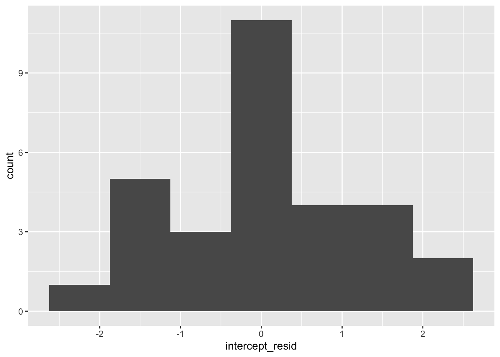
l2_data %>%
ggplot(mapping = aes(sample = intercept_resid)) +
stat_qq()
Those look roughly normal, but a bit wonky. WE NEED TO ADD SOMETHING HERE ABOUT WHAT THE RAMIFICATIONS ARE OF NON NORMAL RESIDUALS.
Next, our slope residuals:
l2_data %>%
ggplot(mapping = aes(x = slope_resid)) +
geom_histogram(binwidth = .50)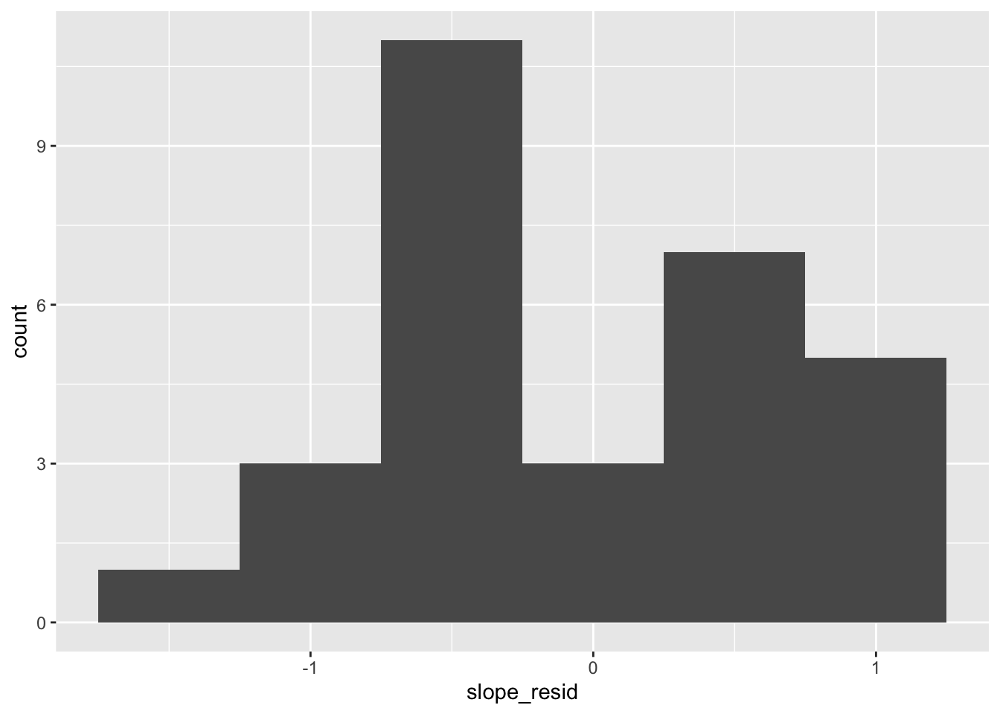
l2_data %>%
ggplot(mapping = aes(sample = slope_resid)) +
stat_qq()
JESS CAN YOU WRITE ABOUT MULTIVARIATE NORMALITY HERE pls –EVENTUALLY BUT NOT KNOW BECAUSE I’M NEARLY 4 HOURS INTO THIS AND AM OUT OF TIME, EEEP.
12.2.8 Assumption 5: Residuals at Level-1 and Level-2 are Independent
Our residuals at level-1 and level-2 should not be related to each other. We can check that with scatterplots and calculating correlations. To do so, we first need to add our level-2 residuals to our level-1 dataset. As mentioned, each school only has one level-2 intercept residual and one level-2 slope residual, but as many level-1 residuals as there are students in that school To add our level-2 residuals to the dataset, then, we need to replicate them X times, where X is the number of students in a school. For example, if a school has 10 students, we need to repeat the level-2 residuals 10 times. (This is how level-2 predictors are encoded, too: for a school with 10 students, the mean values of SES for that school repeats 10 times in the dataset.)
To do that, let’s use the replication function rep with the times argument to repeat each value X times. We can find the number of students per school as follows:
n_per_school <- data %>%
group_by(SCHOOL) %>% # group by school
select(SCHOOL) %>% # we just want to count schools
count() %>%
ungroup() %>%
select(n) %>%
unlist()Then let’s create vectors of level-1 and level-2 residuals that repeat X times:
data$intercept_resid <- rep(l2_data$intercept_resid, times = n_per_school)
data$slope_resid <- rep(l2_data$slope_resid, times = n_per_school)Now that we have a dataset with all of our residuals, let’s assess whether the level-1 and level-2 residuals are correlated with our trusty scatterplots and correlations. First, level-2 intercept residuals and level-1 residuals.
data %>%
ggplot(mapping = aes(x = l1resid, y = intercept_resid)) +
geom_point()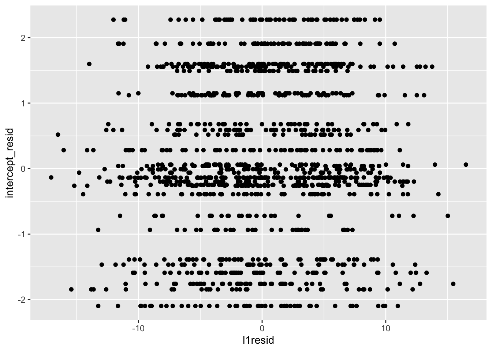
cor.test(data$l1resid, data$intercept_resid)##
## Pearson's product-moment correlation
##
## data: data$l1resid and data$intercept_resid
## t = 2.7251, df = 1327, p-value = 0.006512
## alternative hypothesis: true correlation is not equal to 0
## 95 percent confidence interval:
## 0.02091225 0.12785972
## sample estimates:
## cor
## 0.07460049This looks odd at first, but the striation is because for any one level-2 residual there are multiple level-1 residuals. This looks decent; for each level-2 residual, there seems to be a decent spread of level-1 residuals. We would be concerned if level-1 residuals were clustering so that, say, for lower level-2 residuals there were also lower level-1 residuals or vice versa. Our correlation is also quite small, emphasizing that things seem fine.
Next, level-1 residuals with level-2 slope residuals:
data %>%
ggplot(mapping = aes(x = l1resid, y = slope_resid)) +
geom_point()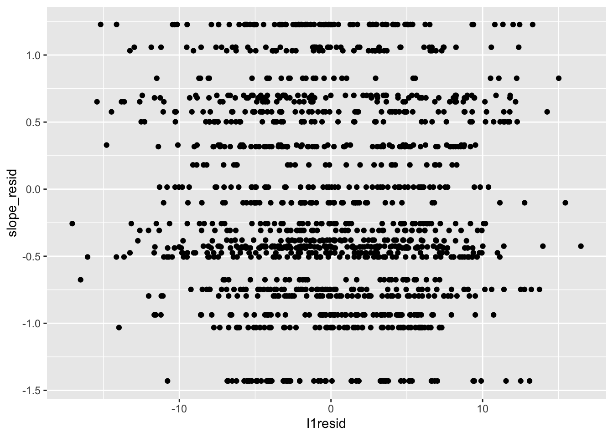
cor.test(data$l1resid, data$slope_resid)##
## Pearson's product-moment correlation
##
## data: data$l1resid and data$slope_resid
## t = -1.666, df = 1327, p-value = 0.09595
## alternative hypothesis: true correlation is not equal to 0
## 95 percent confidence interval:
## -0.099214249 0.008106189
## sample estimates:
## cor
## -0.04568585This similarly looks fine.
12.2.9 Assumption 6: Level-1 Residuals Independent of Level-2 Predictors, Level-2 Residuals Independent of Level-1 Predictors
We’ve tested that our residuals are independent of predictors at their same level — level-1 residuals with ses_cwc and level-2 residuals with ses_mean. We also want residuals to be independent of predictors at the other level — level-1 residuals independent of ses_mean and level-2 residuals independent of ses_cwc. How do we test this? Scatterplots and correlations, of course. Let’s check level-1 residuals first:
data %>%
ggplot(mapping = aes(x = l1resid, y = ses_mean)) +
geom_point()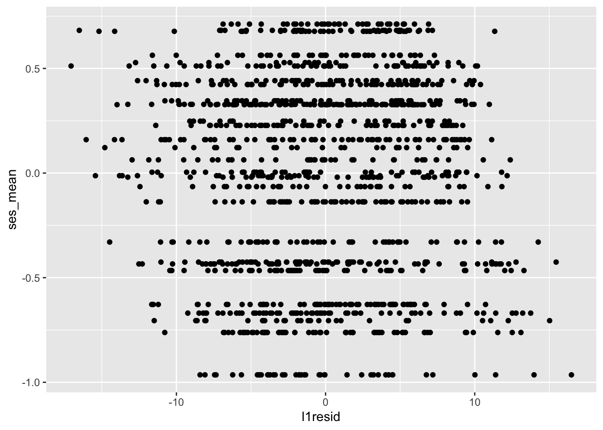
cor.test(data$l1resid, data$ses_mean)##
## Pearson's product-moment correlation
##
## data: data$l1resid and data$ses_mean
## t = -0.000000000000042298, df = 1327, p-value = 1
## alternative hypothesis: true correlation is not equal to 0
## 95 percent confidence interval:
## -0.05377213 0.05377213
## sample estimates:
## cor
## -0.000000000000001161143The scatterplot looks like there might be a pattern where lower values on ses_mean are associated with higher residuals, but the correlation belies this.
Next level-2 intercept residuals:
data %>%
ggplot(mapping = aes(x = intercept_resid, y = CWCses)) +
geom_point()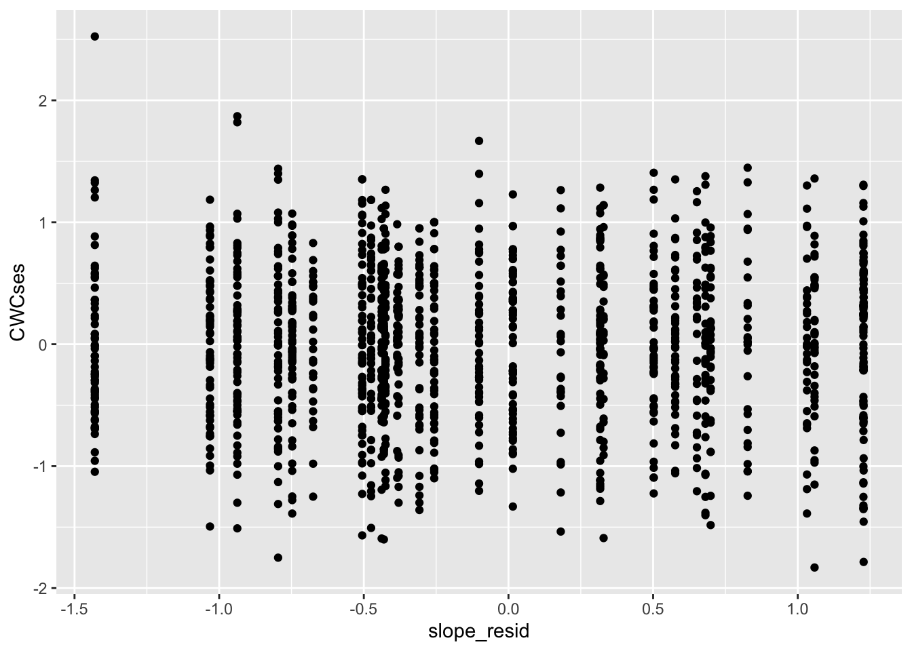
cor.test(data$intercept_resid, data$CWCses)##
## Pearson's product-moment correlation
##
## data: data$intercept_resid and data$CWCses
## t = -0.0000000000000027815, df = 1327, p-value = 1
## alternative hypothesis: true correlation is not equal to 0
## 95 percent confidence interval:
## -0.05377213 0.05377213
## sample estimates:
## cor
## -0.00000000000000007635609Looks good!
And finally level-2 slope residuals:
data %>%
ggplot(mapping = aes(x = slope_resid, y = CWCses)) +
geom_point()
cor.test(data$slope_resid, data$CWCses)##
## Pearson's product-moment correlation
##
## data: data$slope_resid and data$CWCses
## t = -0.0000000000000019141, df = 1327, p-value = 1
## alternative hypothesis: true correlation is not equal to 0
## 95 percent confidence interval:
## -0.05377213 0.05377213
## sample estimates:
## cor
## -0.00000000000000005254428Looks great!
12.3 Conclusion
We could have a longer conclusion here, or a new chapter? SOMETHING ABOUT THIS BEING SUBJECTIVE?
I THINK WHAT NEEDS TO HAPPEN HERE IS THAT YOU REVIEW THE CHAPTER IN THE TEXTBOOK FROM CLASS AND WE SEE IF WE CAN BEEF THIS UP. THIS IS ALWAYS THE ONE IVE BEEN THE MOST THIN ON, AND I’D LIKE TO TAKE THIS AS AN OPPORTUNIY TO MAKE SURE IT IS A BIT MORE THOROUGH. JUST READING A TEXTBOOK CHAPTER ON THIS AND ADDING SOME MORE DISCUSSION AND/OR EXAMPLES WOULD DO THE TRICK. I PROBABLY PULLED THIS FROM THE BOOK, BUT I DON’T QUITE REMEMBER. CAN YOU TAKE A LOOK AND ENSURE NOTHING MAJOR IS MISSING?